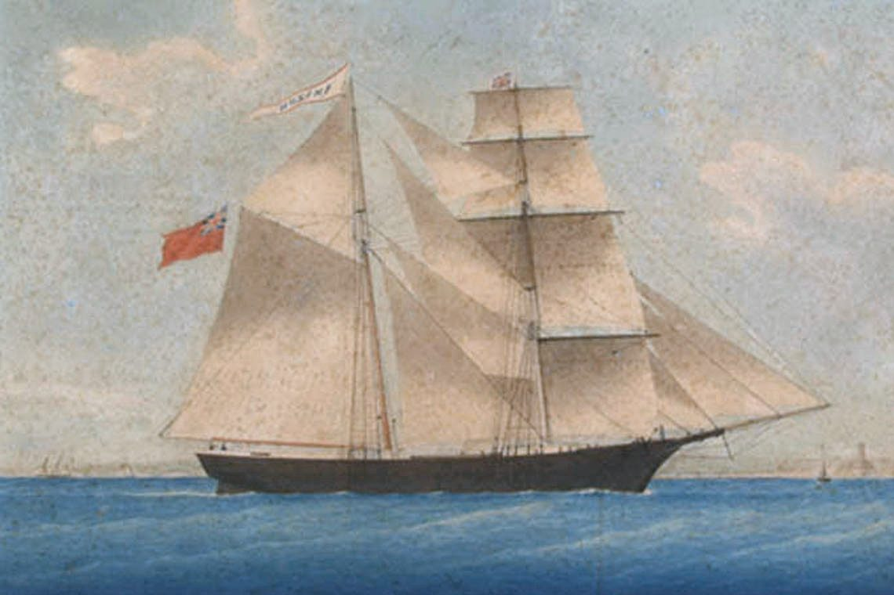
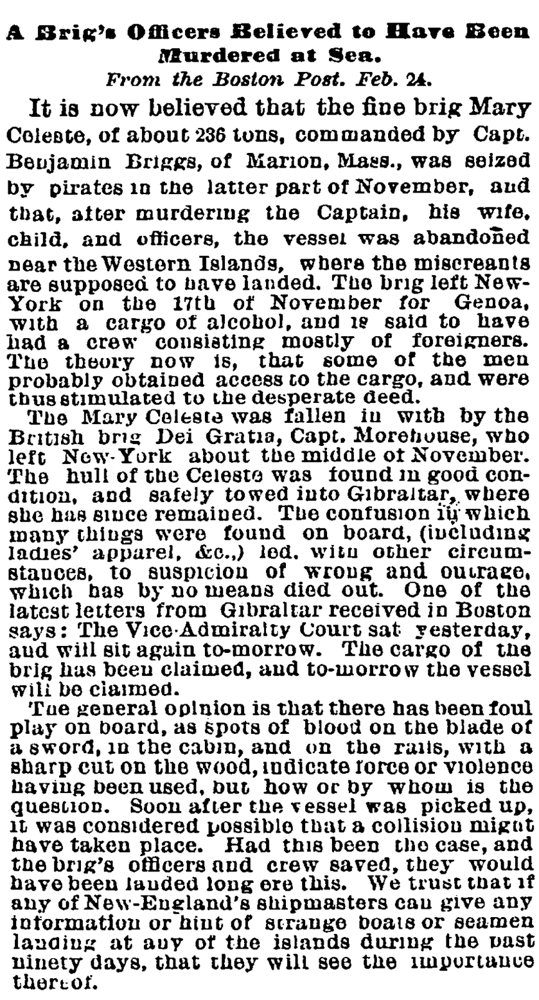
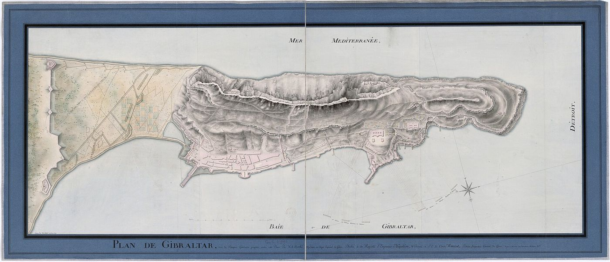
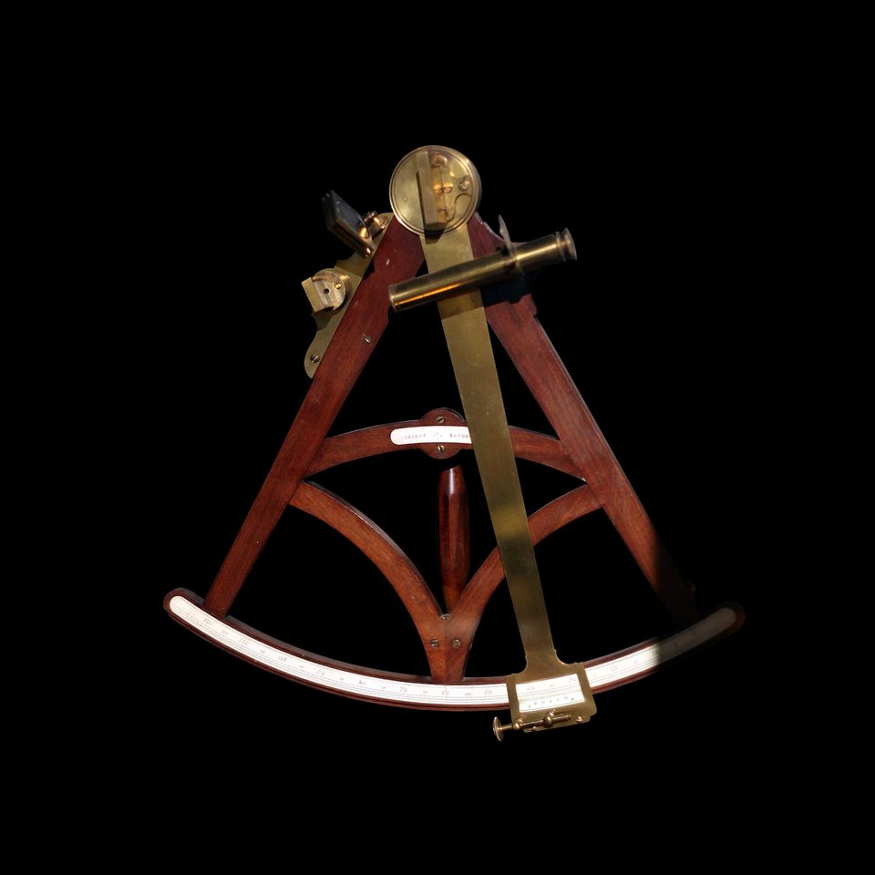

B
最终推理值 0 / 100
第一幕 · 1872年12月4日北大西洋现场勘查互动卷宗




点击任意拍立得，用当前工具标出它的反常死穴。
依次点选两个相邻的证据节点，把它们连成链。
UCL 热力学冷焰公式 · 已解锁
乙醇蒸汽 C₂H₅OH + 氧气，经低温氧化，生成乙醛 + 水 + 微量热
爆炸极限 3.3% ≤ φ ≤ 19%，火焰峰值温度远低于纸张燃点
蒸汽剧烈喷发，却几乎不加热周围木材，所以船上没有焦痕。
最终推理值 0 / 100